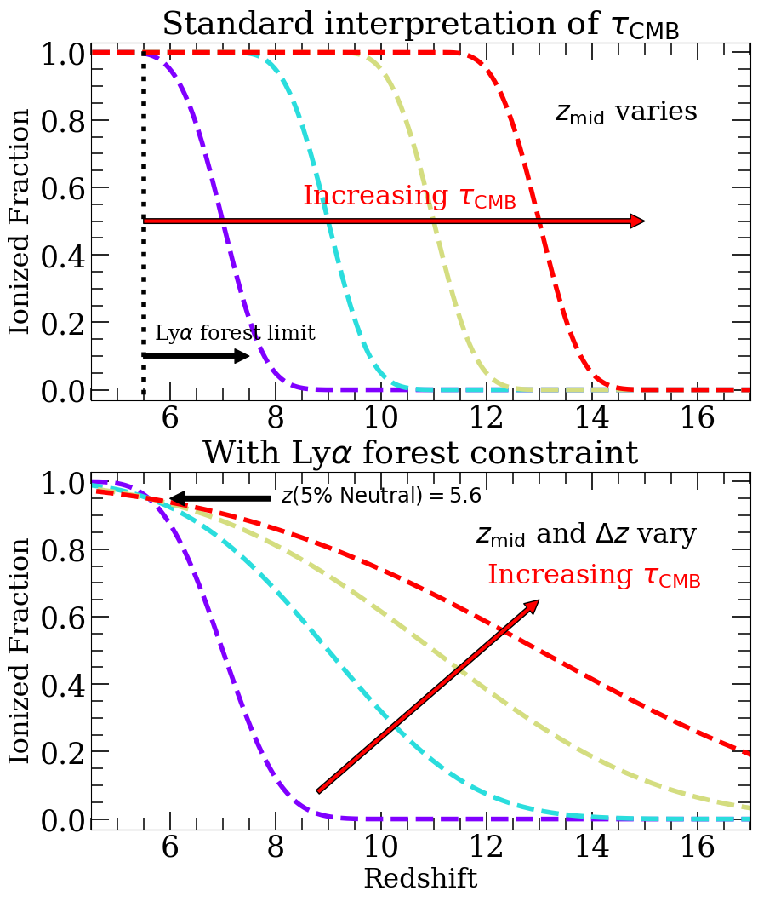
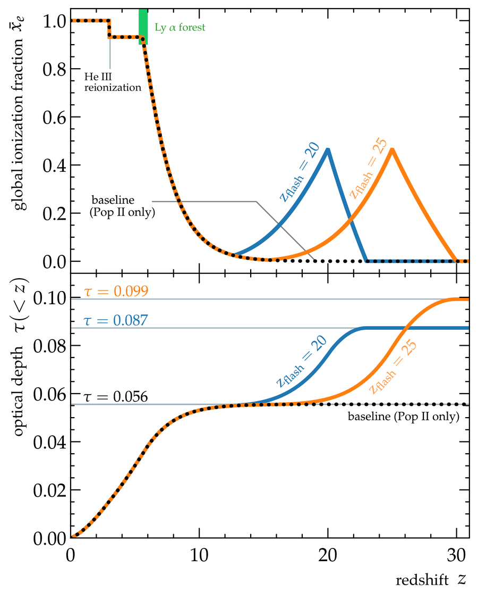
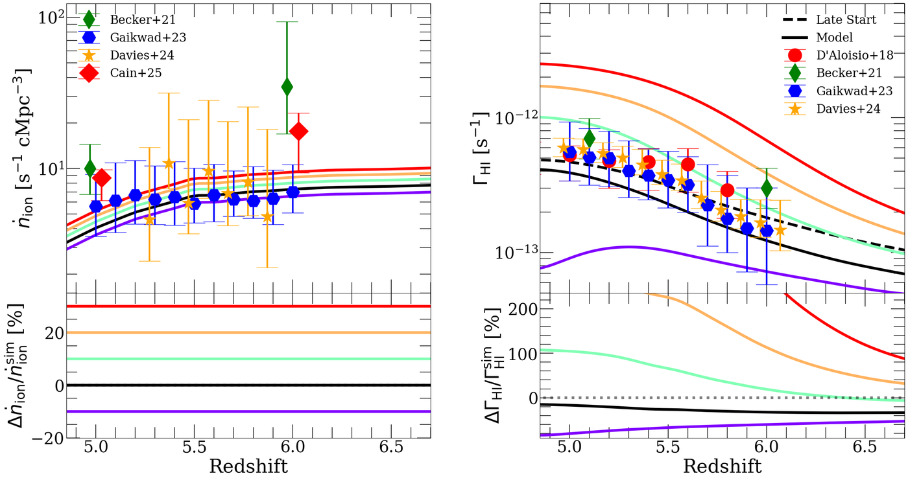

The DESI-CMB τension
Reionization is an important ingredient in precision cosmology because it sets the CMB optical depth, the least well-constrained parameter of the standard cosmological model. This has recently taken on new importance. Measurements of baryon acoustic oscillations (BAO) by the Dark Energy Spectroscopic Instrument (DESI) have highlighted possible tensions in the standard ΛCDM model which, when combined with the CMB, favor a sum of neutrino masses below the minimum allowed by neutrino oscillation experiments. Because the optical depth is degenerate with other cosmological parameters in the small-scale CMB data, these tensions are significantly weakened if the optical depth is ≈ 0.09, rather than the value of 0.058 measured from Planck's large-scale polarization data. Whether such a high optical depth is allowed depends crucially on what we know about reionization.


Traditionally, the optical depth is interpreted as a constraint on the midpoint of reionization. In Cain+25c, we pointed out that once the end of reionization is fixed by the latest Lyman alpha forest constraints, the optical depth becomes a sensitive probe of reionization's duration as well. The image on the left illustrates this. In the standard picture (top), a higher optical depth simply shifts the reionization history to higher redshift, subject only to the requirement that reionization ends before z = 5.5. With the forest pinning the last 5% of reionization to z ≈ 5.6 (bottom), a higher optical depth instead requires reionization to start earlier and last longer. We then compared low and high values of the optical depth to upper limits on the patchy kSZ effect, which constrains reionization's duration, and found that an optical depth of 0.09 is in ≈ 2σ tension with existing limits from the South Pole Telescope.


One way to reconcile a high optical depth with both the forest and the kSZ is an early phase of reionization driven by sources that are only weakly clustered, which adds optical depth without generating much kSZ power. In Aggarwal+26, led by UC Riverside Ph.D. student Yash Aggarwal, we explored a concrete example: supermassive Pop III.1 stars, dark-matter-powered metal-free stars proposed as the progenitors of supermassive black holes. Self-regulating ionizing feedback between these stars imposes a minimum separation of ~1 cMpc between them, limiting large-scale ionization fluctuations and reducing the kSZ power on observationally relevant scales. The image on the left shows the global ionized fraction (top) and the cumulative optical depth (bottom) in a baseline model driven only by galaxies (dotted), and in models where Pop III.1 stars produce a "flash" of ionization centered at z = 20 (blue) or z = 25 (orange), followed by recombination before the galaxy-driven phase of reionization. Our fiducial model reaches an optical depth of 0.087 while ending reionization at z < 6, as required by the forest, and evading the most conservative 2σ upper limits on the kSZ signal from the latest South Pole Telescope data. More broadly, our findings motivate further exploration of early reionization by weakly clustered sources as a possible resolution of tensions between BAO and CMB measurements.
Tools for Cosmological Inference
Incorporating reionization into cosmological analyses requires fast models that can be evaluated many times in a Bayesian inference. With few exceptions, existing fast analytical treatments model only the reionization history, which prevents them from taking full advantage of observables that constrain it indirectly. One such observable is the photo-ionization rate of the IGM, which can be inferred from the mean transmission of the Lyman alpha forest and is highly sensitive to the tail end of reionization. In Cain+26b, we presented a new analytical formalism, based on the cosmological radiative transfer equation, that self-consistently predicts both the reionization history and the photo-ionization rate. Tested against radiative transfer simulations, our model is percent-level accurate in the reionization history and 20-30% accurate in the photo-ionization rate at z < 6 - comparable to or better than current observational uncertainties.


The image above demonstrates the model's usefulness. The left panel shows the ionizing emissivity in one of our simulations (black), along with versions re-scaled by -10% to +30% (colors), compared to recent measurements. The right panel shows the photo-ionization rates our model predicts for each case, compared to measurements from the Lyman alpha forest. Shifts of just 10-20% in the emissivity produce changes in the photo-ionization rate larger than current measurement uncertainties, and the same is true for 5-10% shifts in the redshift at which reionization ends. We used this model in Lopez+26 (see Interpreting Observations) to obtain tight joint constraints on reionization from the CMB and the forest, and expect it to be useful for incorporating more astrophysical constraints into analyses of cosmological data sets.